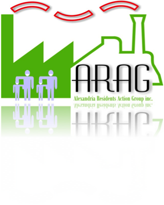

Bridging the Divide: The Eveleigh Bridge Project
For over a century, the railway corridor has served as the industrial heart of Sydney. Today, it remains a physical barrier between neighbourhoods. The proposal supports a practical pedestrian and cycle link.
The Great Divide: Why Connectivity Matters
The rail corridor creates a 3.5-kilometre barrier. A direct connection would reduce walking time and improve local accessibility.
- North: Darlington, Newtown, Sydney University
- South: Alexandria, Erskineville, Waterloo


The Proposed Bridge
- Height: ~9 metres above rail
- Access: Ramps + stairs
- Design: Heritage-sensitive
Campaign Supporters
